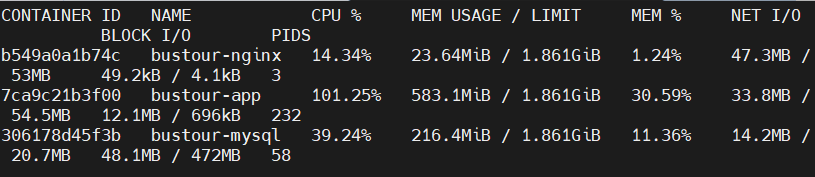
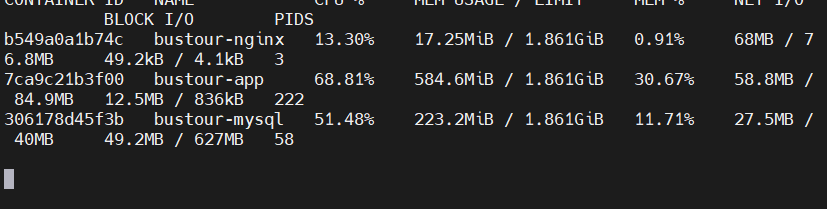

① 락 없는 방식(none · dirty)은 에러 없이 조용히 깨진다.
② 서블릿 sync는 OK인데 JPA sync-tx는 50건 손실 — 커밋이 synchronized 밖에서 일어나기 때문.
③ atomic이 세 구분 모두 정확하고 가장 빠르다.
④ 낙관적 락은 부하가 커질수록 충돌과 누락이 크게 늘어난다.
좌석 100개 투어에 동시 예약 · 정합성 = 남은 좌석 + 예약 수 = 정원 · JUnit · k6 · AWS Lightsail
표의 행이나 아래 버튼을 누르면 상세가 바뀝니다. 시간은 측정 날짜 · PC 상태가 달라 같은 구분 안에서만 비교합니다.
| 초당 요청 | 50 | 100 | 200 | 300 | 400 |
|---|---|---|---|---|---|
| 실제 TPS | 49.9 | 99.7 | 199.4 | 247 | 252 |
| p95 | 9.7ms | 8.0ms | 12.4ms | 1.94s ✗ | 2.11s ✗ |
| 누락 | 0 | 0 | 0 | 540 | 2414 |
더 보내도 약 250에서 멈춤 = 모든 요청이 한 행에 몰린 핫스팟의 천장. 에러는 0.
로컬에서 고른 atomic 을 실제 서비스(예약 → 결제 → 취소)에 적용하고, 같은 서버에 k6 로 부하
회색 행(2 · 5)은 참고용입니다. 5는 JVM 예열 전에 잰 값이라 버리고 6에서 다시 측정했습니다.


로컬 병목 = 커넥션 풀 / 실서버 병목 = 한 행의 락 (커밋이 느린 디스크에서 락을 쥐는 시간이 길어짐)